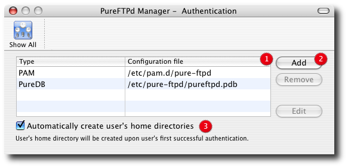
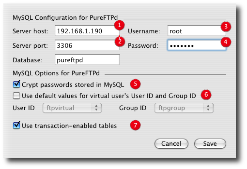

PureFTPd Manager - Authentication

2. Add authentication methods. Pure-FTPd supports multiple methods of authentication : Unix (Mac OS 10.2 only), PAM (Mac OS 10.3 and above), PureDB (virtual users), LDAP directories, MySQL databases, Postgres databases, external authentication handlers (with pure-authd - not configurable through PureFTPd Manager at this time). 3. If the home directory of a user doesn't exist, automatically create it. The newly created home directory belongs to the user and permissions are set according to the current directory mask. Only the home directory can be created (so /Users/marie/./pub/ won't work, but /Users/marie will). To avoid local attacks, the parent directory should never belong to an untrusted user. Also note that you must trust whoever manages the users databases, because with that feature, he'll be able to create/chown directories anywhere on the server's filesystem. Disable Mac OS X Users Mac OS X users have access to Pure-FTPd with their existing user names and passwords via a system called pam, which is used for authentication. You can disable access for all OS X users, not just a subset, through PureFTPd Manager. Here are the steps:
2. Select the line whose type is PAM. 3. Click Remove. 4. Close the Preferences window / restart your FTP server. MySQL support Click the Add button and select MySQL from the window sheet that appear. You will get to this screen :

5. Name of the database storing your virtual users. 6. Whether or not to use default system uid and gid to map the user to. 7. Database option : If you upgraded your tables to transaction-enabled tables, you can configure Pure-FTPd to take advantage of transactions. That way, you can be sure that all info parsed by the server is complete even if you're updating it at the same time. Don't enable transactions on tables that still are in ISAM or MyISAM formats. Transactions are only working with newer backends (Gemini, InnoDB, BerkeleyDB...) and in recent MySQL versions. Click on save to save your settings. An new item is available in the User Manager From (8.) pop-up and you can directly create new users stored in your database from PureFTPd Manager. |